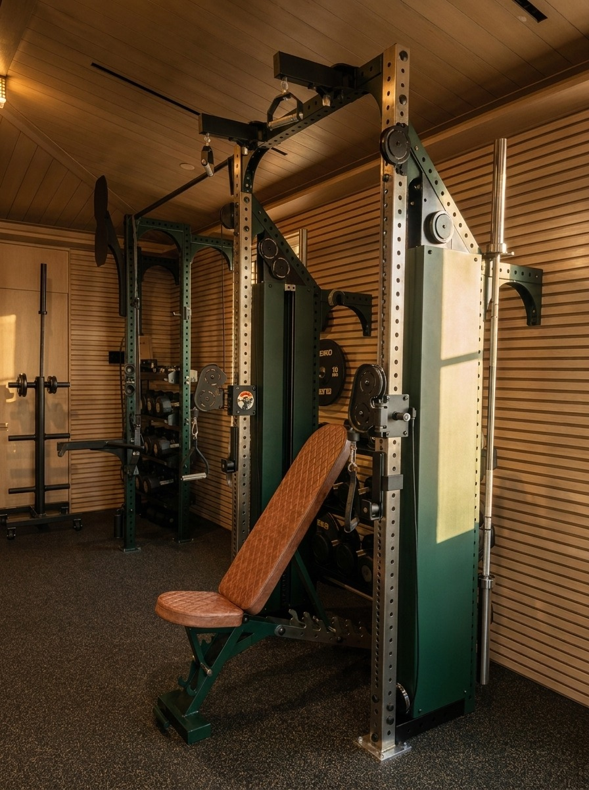

01
Member Needs
Use patterns, age ranges, ability levels, training preferences, peak periods, and sources of intimidation or friction.
Too often, the fitness room falls short of the standard set by the course, dining, racquet facilities, and broader member experience. Performance Edge helps clubs close that gap with training and recovery environments designed around members, staff, programming, and daily use.
Discuss Your ClubThe course should not be the only world-class performance environment on the property.
Member expectations have moved beyond a room of cardio machines and a rack of dumbbells. The fitness facility now has to serve different ages, abilities, training preferences, coaches, seasons, and recovery needs—without feeling institutional or disconnected from the club.
Performance Edge is entering this market selectively. We bring a practitioner’s understanding of training, flow, equipment, and behavior, paired with proven design coordination from private residential and marine projects.

An independent assessment and phased roadmap for clubs that need clarity before committing to equipment, renovation, or construction.
A decision-ready starting point for leadership, committees, and boards.
Review member needs, layout, equipment, programming, recovery, operations, and club alignment—then organize the findings into immediate, phased, and long-term priorities.
Explore the AuditUse patterns, age ranges, ability levels, training preferences, peak periods, and sources of intimidation or friction.
Cardio, strength, functional training, mobility, assessment, coaching, and circulation resolved as one system.
Durable, serviceable equipment selected around member demand, programming, space, staffing, and lifecycle.
Mobility, recovery, sauna, cold, treatment, and quiet spaces considered in relation to the fitness experience.
Materials, lighting, signage, acoustics, and finishes that make fitness feel connected to the rest of the property.
Priorities organized around budget, disruption, equipment lifecycle, project readiness, and long-term planning.
Performance Edge does not yet claim a completed country-club project. We are accepting select opportunities where our training-floor expertise and performance-led design process can help a club rethink an overlooked fitness or wellness facility.
Clubs planning a full fitness-center renovation or expansion.
Facilities replacing aging equipment without a clear long-term plan.
Clubs adding strength, functional training, recovery, or small-group programming.
Leadership teams that need a phased roadmap before committing to construction.
Architects and designers who need a fitness specialist inside a broader club project.
Leadership goals, member profile, staffing, programming, budget, schedule, and constraints.
Existing layout, equipment, usage, flow, condition, storage, access, and experience.
Member and operational requirements translated into a clear facility program.
Layout, zones, equipment strategy, recovery, design direction, and implementation options.
Specifications aligned with club leadership, facilities, architects, builders, and vendors.
Procurement, installation, punch-list review, and team handover coordinated around operations.
Not yet. Performance Edge is now accepting select country-club fitness and wellness projects. We present that status directly rather than implying an established club portfolio.
Yes. Existing conditions, priorities, member disruption, equipment lifecycle, and budget can be organized into an improvement plan rather than requiring every change at once.
Yes. The process is designed to coordinate member needs, fitness operations, facilities, architecture, interiors, construction, equipment, and installation.
Tell us about the property, current fitness facility, membership, project goals, and planning stage.
Start a Conversation